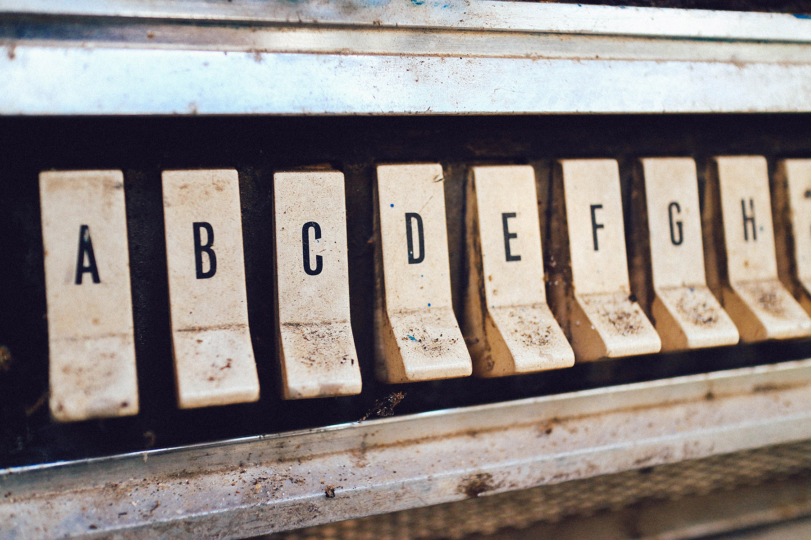

An ancient metaphor: thought is a thread, and the raconteur is a spinner of yarns - but the true storyteller, the poet, is a weaver. The scribes made this old and audible abstraction into a new and visible fact. After long practice, their work took on such an even, flexible texture that they called the written page a textus, which means cloth.
The typesetting device, whether it happens to be a computer or a composing stick, functions like a loom. And the typogra- pher, like the scribe, normally aims to weave the text as evenly as possible. Good letterforms are designed to give a lively, even texture, but careless spacing of letters, lines and words can tear this fabric apart.
Another ancient metaphor: the density of texture in a written or typeset page is called its color. This has nothing to do with red or green ink; it refers only to the darkness or blackness of the letterforms in mass. Once the demands of legibility and logical order are satisfied, evenness of color is the typographer's normal aim. And color depends on four things: the design of the type, the spacing between the letters, the spacing between the words, and the spacing between the lines. None is independent of the others.
Type is normally measured in picas and points (explained in detail on pages 328-329), but horizontal spacing is measured in ems, and the em is a sliding measure. One em is a distance equal to the type size. In 6 point type, an em is 6 points; in 12 pt type it is 12 points, and in 60 pt type it is 60 points. Thus a one-em space is proportionately the same in any size.
 Back to Course Home Page